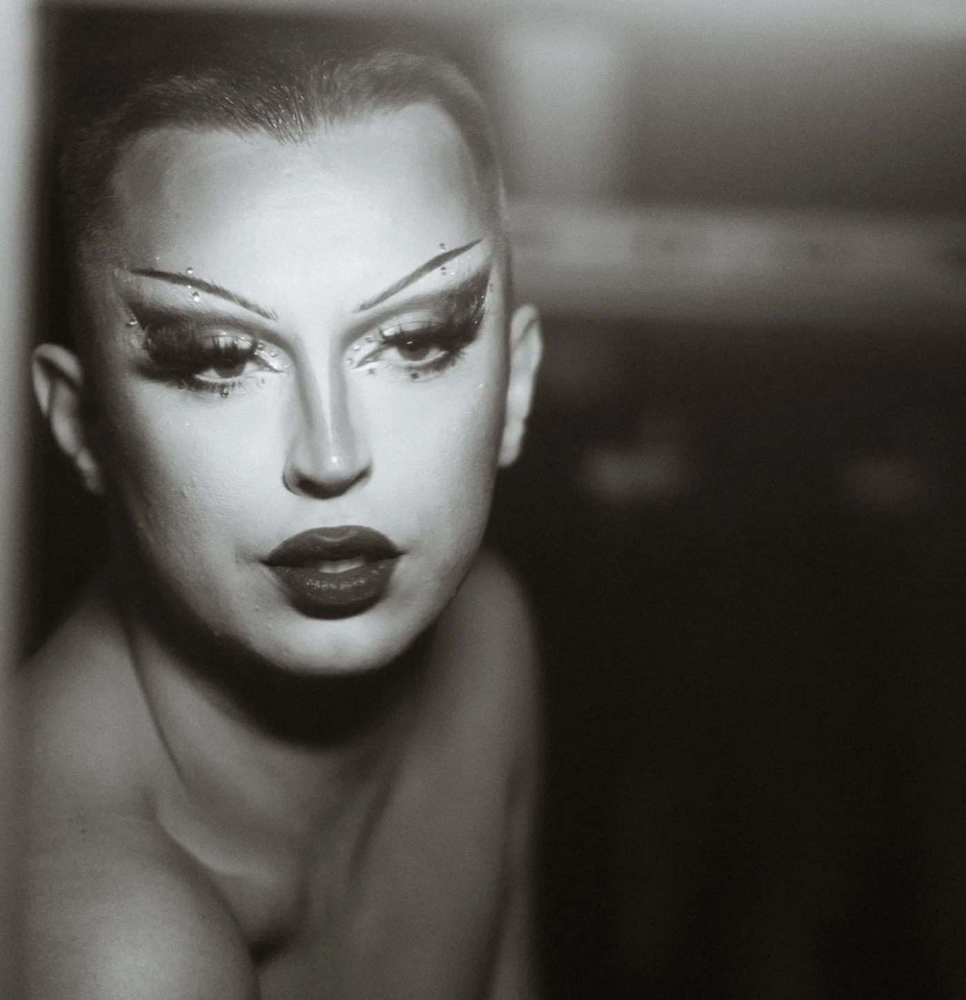

01
Dutch Queer Scene and its Beauty
An ongoing documentary series on the diverse queer scene across the Netherlands. Drag queens, kings, pups and other communities, shot in Rotterdam, Spijkenisse, Maastricht, Utrecht and Amsterdam.
View project